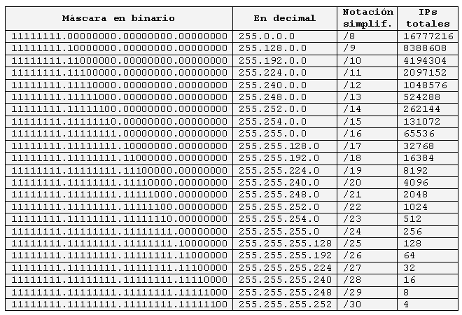

Máscara de subred personalizadas
Respecto a los 4 octetos, la máscara de subred son:

Tabla de máscaras
En la primera columna de la tabla anterior, vemos los posibles valores de las máscaras en sistema binario.
En la segunda columna, vemos los valores de las máscaras en decimal.
En la tercera columna, vemos los valores de las máscaras en notación de barra diagonal o notación simplificada indicando el número de ‘unos’ de la máscara. Cuando queremos decir que una PC tiene configurada la dirección IP 192.168.0.213 y máscara 255.255.255.0, normalmente se dice que tiene la IP 192.168.0.213/24.
En la cuarta columna vemos las direcciones totales incluida la dirección de red y la dirección de broadcast. Para calcular el número de direcciones asignables a PCs, debemos restar dos unidades a ese número ya que ni la primera IP (dirección de red) ni la última (dirección de broadcast) son asignables a PCs. El resto sí, aunque acaben en cero, aunque si sobran, se recomienda no usar las que acaben en cero.